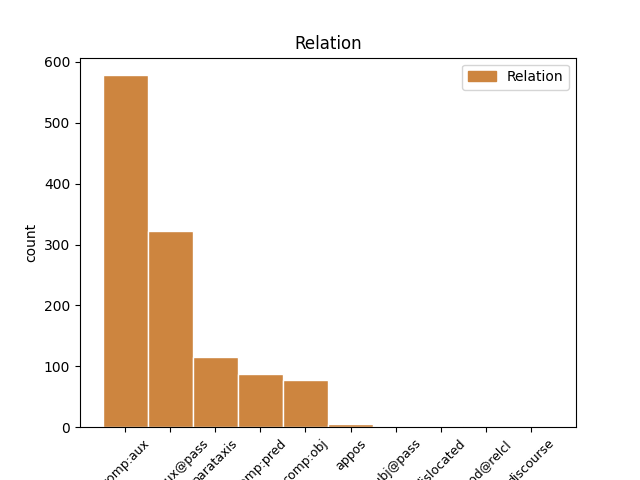
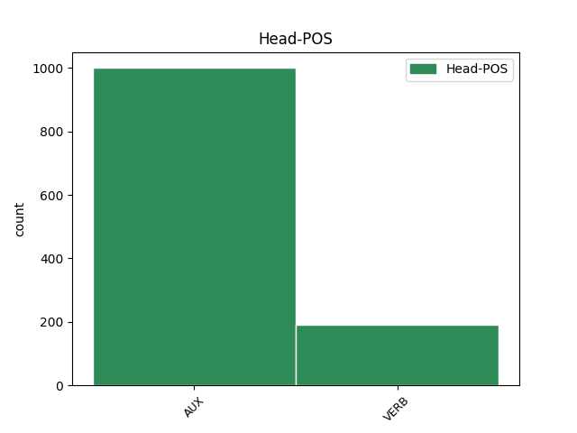
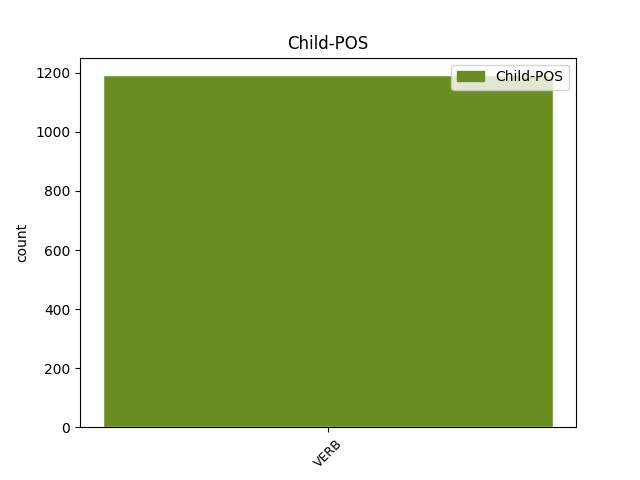

Distribution of features within this leaf



Agreement Rules sorted by frequency.
- When the dependent token is the complement for auxiliary(comp:aux) of the head token, and the dependent token is VERB.
1 I _ _ _ _ 0 _ _ _
2 had have AUX PAST-AUX Mood=Ind|Tense=Past|VerbForm=Fin 0 _ _ _
3 begun begin VERB PERF Tense=Past|VerbForm=Part 2 comp:aux _ _
4 as _ _ _ _ 0 _ _ _
5 an _ _ _ _ 0 _ _ _
6 adversary _ _ _ _ 0 _ _ _
7 , _ _ _ _ 0 _ _ _
8 become _ _ _ _ 0 _ _ _
9 an _ _ _ _ 0 _ _ _
10 audience _ _ _ _ 0 _ _ _
11 , _ _ _ _ 0 _ _ _
12 and _ _ _ _ 0 _ _ _
13 now _ _ _ _ 0 _ _ _
14 seemed _ _ _ _ 0 _ _ _
15 only _ _ _ _ 0 _ _ _
16 a _ _ _ _ 0 _ _ _
17 footlight _ _ _ _ 0 _ _ _
18 . _ _ _ _ 0 _ _ _
1 My _ _ _ _ 0 _ _ _
2 grandmother _ _ _ _ 0 _ _ _
3 , _ _ _ _ 0 _ _ _
4 who _ _ _ _ 0 _ _ _
5 was be AUX PAST Mood=Ind|Number=Sing|Person=1|Tense=Past|VerbForm=Fin 0 _ _ _
6 firmly _ _ _ _ 0 _ _ _
7 convinced convince VERB PASS Tense=Past|VerbForm=Part|Voice=Pass 5 comp:aux@pass _ _
8 by _ _ _ _ 0 _ _ _
9 the _ _ _ _ 0 _ _ _
10 Word _ _ _ _ 0 _ _ _
11 of _ _ _ _ 0 _ _ _
12 the _ _ _ _ 0 _ _ _
13 Lord _ _ _ _ 0 _ _ _
14 , _ _ _ _ 0 _ _ _
15 took _ _ _ _ 0 _ _ _
16 more _ _ _ _ 0 _ _ _
17 pleasure _ _ _ _ 0 _ _ _
18 in _ _ _ _ 0 _ _ _
19 that _ _ _ _ 0 _ _ _
20 hour _ _ _ _ 0 _ _ _
21 than _ _ _ _ 0 _ _ _
22 in _ _ _ _ 0 _ _ _
23 any _ _ _ _ 0 _ _ _
24 other _ _ _ _ 0 _ _ _
25 of _ _ _ _ 0 _ _ _
26 the _ _ _ _ 0 _ _ _
27 week _ _ _ _ 0 _ _ _
28 , _ _ _ _ 0 _ _ _
29 including _ _ _ _ 0 _ _ _
30 2 _ _ _ _ 0 _ _ _
31 p.m. _ _ _ _ 0 _ _ _
32 Thursday _ _ _ _ 0 _ _ _
33 when _ _ _ _ 0 _ _ _
34 she _ _ _ _ 0 _ _ _
35 drew _ _ _ _ 0 _ _ _
36 her _ _ _ _ 0 _ _ _
37 pension _ _ _ _ 0 _ _ _
38 . _ _ _ _ 0 _ _ _
1 He _ _ _ _ 0 _ _ _
2 said say VERB PAST Mood=Ind|Tense=Past|VerbForm=Fin 0 _ _ _
3 those _ _ _ _ 0 _ _ _
4 things _ _ _ _ 0 _ _ _
5 to _ _ _ _ 0 _ _ _
6 my _ _ _ _ 0 _ _ _
7 mother _ _ _ _ 0 _ _ _
8 , _ _ _ _ 0 _ _ _
9 I _ _ _ _ 0 _ _ _
10 heard hear VERB PAST Mood=Ind|Tense=Past|VerbForm=Fin 2 parataxis _ _
11 them _ _ _ _ 0 _ _ _
12 , _ _ _ _ 0 _ _ _
13 but _ _ _ _ 0 _ _ _
14 to _ _ _ _ 0 _ _ _
15 me _ _ _ _ 0 _ _ _
16 he _ _ _ _ 0 _ _ _
17 said _ _ _ _ 0 _ _ _
18 , _ _ _ _ 0 _ _ _
19 by _ _ _ _ 0 _ _ _
20 the _ _ _ _ 0 _ _ _
21 sun-dial _ _ _ _ 0 _ _ _
22 , _ _ _ _ 0 _ _ _
23 ' _ _ _ _ 0 _ _ _
24 I _ _ _ _ 0 _ _ _
25 'm _ _ _ _ 0 _ _ _
26 forty-one _ _ _ _ 0 _ _ _
27 and _ _ _ _ 0 _ _ _
28 the _ _ _ _ 0 _ _ _
29 sea _ _ _ _ 0 _ _ _
30 is _ _ _ _ 0 _ _ _
31 dying _ _ _ _ 0 _ _ _
32 . _ _ _ _ 0 _ _ _
33 ' _ _ _ _ 0 _ _ _
1 I _ _ _ _ 0 _ _ _
2 noticed notice VERB PAST Mood=Ind|Tense=Past|VerbForm=Fin 0 _ _ _
3 I _ _ _ _ 0 _ _ _
4 had have VERB PAST Mood=Ind|Tense=Past|VerbForm=Fin 2 comp:obj _ _
5 a _ _ _ _ 0 _ _ _
6 terrible _ _ _ _ 0 _ _ _
7 pain _ _ _ _ 0 _ _ _
8 in _ _ _ _ 0 _ _ _
9 my _ _ _ _ 0 _ _ _
10 neck _ _ _ _ 0 _ _ _
11 . _ _ _ _ 0 _ _ _
1 Are be AUX PRES Mood=Ind|Tense=Pres|VerbForm=Fin 0 _ _ _
2 you _ _ _ _ 0 _ _ _
3 coming come VERB ING Tense=Pres|VerbForm=Part 1 comp:pred _ _
4 into _ _ _ _ 0 _ _ _
5 Gringotts _ _ _ _ 0 _ _ _
6 , _ _ _ _ 0 _ _ _
7 Harry _ _ _ _ 0 _ _ _
8 ? _ _ _ _ 0 _ _ _
1 He _ _ _ _ 0 _ _ _
2 attended attend VERB PAST Tense=Past|VerbForm=Part 0 _ _ _
3 most _ _ _ _ 0 _ _ _
4 of _ _ _ _ 0 _ _ _
5 the _ _ _ _ 0 _ _ _
6 official _ _ _ _ 0 _ _ _
7 occasions _ _ _ _ 0 _ _ _
8 ( _ _ _ _ 0 _ _ _
9 he _ _ _ _ 0 _ _ _
10 and _ _ _ _ 0 _ _ _
11 Roly _ _ _ _ 0 _ _ _
12 saluted salute VERB PAST Mood=Ind|Tense=Past|VerbForm=Fin 2 appos _ _
13 each _ _ _ _ 0 _ _ _
14 other _ _ _ _ 0 _ _ _
15 with _ _ _ _ 0 _ _ _
16 mock _ _ _ _ 0 _ _ _
17 surprise _ _ _ _ 0 _ _ _
18 when _ _ _ _ 0 _ _ _
19 they _ _ _ _ 0 _ _ _
20 met _ _ _ _ 0 _ _ _
21 in _ _ _ _ 0 _ _ _
22 the _ _ _ _ 0 _ _ _
23 house _ _ _ _ 0 _ _ _
24 , _ _ _ _ 0 _ _ _
25 half-dressed _ _ _ _ 0 _ _ _
26 in _ _ _ _ 0 _ _ _
27 formal _ _ _ _ 0 _ _ _
28 dinner _ _ _ _ 0 _ _ _
29 clothes _ _ _ _ 0 _ _ _
30 every _ _ _ _ 0 _ _ _
31 night _ _ _ _ 0 _ _ _
32 ) _ _ _ _ 0 _ _ _
33 but _ _ _ _ 0 _ _ _
34 the _ _ _ _ 0 _ _ _
35 real _ _ _ _ 0 _ _ _
36 parties _ _ _ _ 0 _ _ _
37 took _ _ _ _ 0 _ _ _
38 place _ _ _ _ 0 _ _ _
39 before _ _ _ _ 0 _ _ _
40 and _ _ _ _ 0 _ _ _
41 after _ _ _ _ 0 _ _ _
42 . _ _ _ _ 0 _ _ _
1 Evelyn _ _ _ _ 0 _ _ _
2 Odara _ _ _ _ 0 _ _ _
3 spoke _ _ _ _ 0 _ _ _
4 to _ _ _ _ 0 _ _ _
5 her _ _ _ _ 0 _ _ _
6 husband _ _ _ _ 0 _ _ _
7 as _ _ _ _ 0 _ _ _
8 no _ _ _ _ 0 _ _ _
9 local _ _ _ _ 0 _ _ _
10 woman _ _ _ _ 0 _ _ _
11 would _ _ _ _ 0 _ _ _
12 dare _ _ _ _ 0 _ _ _
13 ; _ _ _ _ 0 _ _ _
14 yet _ _ _ _ 0 _ _ _
15 he _ _ _ _ 0 _ _ _
16 ignored _ _ _ _ 0 _ _ _
17 it _ _ _ _ 0 _ _ _
18 , _ _ _ _ 0 _ _ _
19 as _ _ _ _ 0 _ _ _
20 if _ _ _ _ 0 _ _ _
21 turning _ _ _ _ 0 _ _ _
22 the _ _ _ _ 0 _ _ _
23 tables _ _ _ _ 0 _ _ _
24 on _ _ _ _ 0 _ _ _
25 her _ _ _ _ 0 _ _ _
26 with _ _ _ _ 0 _ _ _
27 his _ _ _ _ 0 _ _ _
28 countrymen _ _ _ _ 0 _ _ _
29 's _ _ _ _ 0 _ _ _
30 assumption _ _ _ _ 0 _ _ _
31 that _ _ _ _ 0 _ _ _
32 what _ _ _ _ 0 _ _ _
33 women _ _ _ _ 0 _ _ _
34 said say VERB PAST Mood=Ind|Tense=Past|VerbForm=Fin 35 subj@pass _ _
35 was be AUX PAST Mood=Ind|Number=Sing|Person=1|Tense=Past|VerbForm=Fin 0 _ _ _
36 not _ _ _ _ 0 _ _ _
37 heard _ _ _ _ 0 _ _ _
38 , _ _ _ _ 0 _ _ _
39 anyway _ _ _ _ 0 _ _ _
40 . _ _ _ _ 0 _ _ _
1 There _ _ _ _ 0 _ _ _
2 were be VERB PAST Mood=Ind|Tense=Past|VerbForm=Fin 0 _ _ _
3 men _ _ _ _ 0 _ _ _
4 there _ _ _ _ 0 _ _ _
5 he _ _ _ _ 0 _ _ _
6 knew know VERB PAST Mood=Ind|Tense=Past|VerbForm=Fin 2 dislocated _ SpaceAfter=No
7 , _ _ _ _ 0 _ _ _
8 idle _ _ _ _ 0 _ _ _
9 like _ _ _ _ 0 _ _ _
10 him _ _ _ _ 0 _ _ _
11 , _ _ _ _ 0 _ _ _
12 and _ _ _ _ 0 _ _ _
13 they _ _ _ _ 0 _ _ _
14 envied _ _ _ _ 0 _ _ _
15 him _ _ _ _ 0 _ _ _
16 his _ _ _ _ 0 _ _ _
17 money _ _ _ _ 0 _ _ _
18 and _ _ _ _ 0 _ _ _
19 although _ _ _ _ 0 _ _ _
20 he _ _ _ _ 0 _ _ _
21 was _ _ _ _ 0 _ _ _
22 not _ _ _ _ 0 _ _ _
23 stupid _ _ _ _ 0 _ _ _
24 enough _ _ _ _ 0 _ _ _
25 to _ _ _ _ 0 _ _ _
26 envy _ _ _ _ 0 _ _ _
27 them _ _ _ _ 0 _ _ _
28 their _ _ _ _ 0 _ _ _
29 poverty _ _ _ _ 0 _ _ _
30 , _ _ _ _ 0 _ _ _
31 there _ _ _ _ 0 _ _ _
32 was _ _ _ _ 0 _ _ _
33 part _ _ _ _ 0 _ _ _
34 of _ _ _ _ 0 _ _ _
35 him _ _ _ _ 0 _ _ _
36 that _ _ _ _ 0 _ _ _
37 regretted _ _ _ _ 0 _ _ _
38 all _ _ _ _ 0 _ _ _
39 he _ _ _ _ 0 _ _ _
40 had _ _ _ _ 0 _ _ _
41 done _ _ _ _ 0 _ _ _
42 . _ _ _ _ 0 _ _ _
1 We _ _ _ _ 0 _ _ _
2 heard _ _ _ _ 0 _ _ _
3 a _ _ _ _ 0 _ _ _
4 lorry _ _ _ _ 0 _ _ _
5 coming _ _ _ _ 0 _ _ _
6 up _ _ _ _ 0 _ _ _
7 behind _ _ _ _ 0 _ _ _
8 and _ _ _ _ 0 _ _ _
9 my _ _ _ _ 0 _ _ _
10 mother _ _ _ _ 0 _ _ _
11 told _ _ _ _ 0 _ _ _
12 me _ _ _ _ 0 _ _ _
13 it _ _ _ _ 0 _ _ _
14 had have VERB PAST Mood=Ind|Tense=Past|VerbForm=Fin 0 _ _ _
15 a _ _ _ _ 0 _ _ _
16 television _ _ _ _ 0 _ _ _
17 crew _ _ _ _ 0 _ _ _
18 on _ _ _ _ 0 _ _ _
19 board _ _ _ _ 0 _ _ _
20 which _ _ _ _ 0 _ _ _
21 excited excite VERB PAST Mood=Ind|Tense=Past|VerbForm=Fin 14 mod@relcl _ _
22 me _ _ _ _ 0 _ _ _
23 who _ _ _ _ 0 _ _ _
24 had _ _ _ _ 0 _ _ _
25 never _ _ _ _ 0 _ _ _
26 seen _ _ _ _ 0 _ _ _
27 a _ _ _ _ 0 _ _ _
28 television _ _ _ _ 0 _ _ _
29 . _ _ _ _ 0 _ _ _
Disagree Examples:
1 Certain _ _ _ _ 0 _ _ _
2 ANSI-89 _ _ _ _ 0 _ _ _
3 SQL _ _ _ _ 0 _ _ _
4 features _ _ _ _ 0 _ _ _
5 are be AUX PRES-AUX Mood=Ind|Tense=Pres|VerbForm=Fin 0 _ _ _
6 not _ _ _ _ 0 _ _ _
7 implemented implement VERB PASS Tense=Past|VerbForm=Part|Voice=Pass 5 comp:aux@pass _ _
8 and _ _ _ _ 0 _ _ _
9 the _ _ _ _ 0 _ _ _
10 wildcard _ _ _ _ 0 _ _ _
11 characters _ _ _ _ 0 _ _ _
12 conform _ _ _ _ 0 _ _ _
13 to _ _ _ _ 0 _ _ _
14 the _ _ _ _ 0 _ _ _
15 Visual _ _ _ _ 0 _ _ _
16 Basic _ _ _ _ 0 _ _ _
17 for _ _ _ _ 0 _ _ _
18 Applications _ _ _ _ 0 _ _ _
19 ( _ _ _ _ 0 _ _ _
20 VBA _ _ _ _ 0 _ _ _
21 ) _ _ _ _ 0 _ _ _
22 specification _ _ _ _ 0 _ _ _
23 , _ _ _ _ 0 _ _ _
24 not _ _ _ _ 0 _ _ _
25 SQL _ _ _ _ 0 _ _ _
26 . _ _ _ _ 0 _ _ _
1 You _ _ _ _ 0 _ _ _
2 can _ _ _ _ 0 _ _ _
3 not _ _ _ _ 0 _ _ _
4 set _ _ _ _ 0 _ _ _
5 the _ _ _ _ 0 _ _ _
6 SQL _ _ _ _ 0 _ _ _
7 query _ _ _ _ 0 _ _ _
8 mode _ _ _ _ 0 _ _ _
9 new _ _ _ _ 0 _ _ _
10 database _ _ _ _ 0 _ _ _
11 default _ _ _ _ 0 _ _ _
12 to _ _ _ _ 0 _ _ _
13 ANSI-92 _ _ _ _ 0 _ _ _
14 in _ _ _ _ 0 _ _ _
15 2000 _ _ _ _ 0 _ _ _
16 file _ _ _ _ 0 _ _ _
17 format _ _ _ _ 0 _ _ _
18 because _ _ _ _ 0 _ _ _
19 the _ _ _ _ 0 _ _ _
20 option _ _ _ _ 0 _ _ _
21 is be AUX PRES-AUX Mood=Ind|Number=Sing|Person=3|Tense=Pres|VerbForm=Fin 0 _ _ _
22 disabled disable VERB PASS Tense=Past|VerbForm=Part|Voice=Pass 21 comp:aux@pass _ SpaceAfter=No
23 ; _ _ _ _ 0 _ _ _
1 When _ _ _ _ 0 _ _ _
2 you _ _ _ _ 0 _ _ _
3 open _ _ _ _ 0 _ _ _
4 a _ _ _ _ 0 _ _ _
5 page _ _ _ _ 0 _ _ _
6 , _ _ _ _ 0 _ _ _
7 Access _ _ _ _ 0 _ _ _
8 reads _ _ _ _ 0 _ _ _
9 the _ _ _ _ 0 _ _ _
10 connection _ _ _ _ 0 _ _ _
11 file _ _ _ _ 0 _ _ _
12 that _ _ _ _ 0 _ _ _
13 is be AUX PRES-AUX Mood=Ind|Number=Sing|Person=3|Tense=Pres|VerbForm=Fin 0 _ _ _
14 linked link VERB PASS Tense=Past|VerbForm=Part|Voice=Pass 13 comp:aux@pass _ _
15 to _ _ _ _ 0 _ _ _
16 the _ _ _ _ 0 _ _ _
17 page _ _ _ _ 0 _ _ _
18 , _ _ _ _ 0 _ _ _
19 and _ _ _ _ 0 _ _ _
20 based _ _ _ _ 0 _ _ _
21 on _ _ _ _ 0 _ _ _
22 the _ _ _ _ 0 _ _ _
23 contents _ _ _ _ 0 _ _ _
24 of _ _ _ _ 0 _ _ _
25 the _ _ _ _ 0 _ _ _
26 connection _ _ _ _ 0 _ _ _
27 file _ _ _ _ 0 _ _ _
28 , _ _ _ _ 0 _ _ _
29 connects _ _ _ _ 0 _ _ _
30 the _ _ _ _ 0 _ _ _
31 page _ _ _ _ 0 _ _ _
32 to _ _ _ _ 0 _ _ _
33 the _ _ _ _ 0 _ _ _
34 appropriate _ _ _ _ 0 _ _ _
35 data _ _ _ _ 0 _ _ _
36 source _ _ _ _ 0 _ _ _
37 . _ _ _ _ 0 _ _ _
1 When _ _ _ _ 0 _ _ _
2 you _ _ _ _ 0 _ _ _
3 establish _ _ _ _ 0 _ _ _
4 a _ _ _ _ 0 _ _ _
5 link _ _ _ _ 0 _ _ _
6 between _ _ _ _ 0 _ _ _
7 the _ _ _ _ 0 _ _ _
8 connection _ _ _ _ 0 _ _ _
9 file _ _ _ _ 0 _ _ _
10 and _ _ _ _ 0 _ _ _
11 a _ _ _ _ 0 _ _ _
12 page _ _ _ _ 0 _ _ _
13 , _ _ _ _ 0 _ _ _
14 the _ _ _ _ 0 _ _ _
15 page _ _ _ _ 0 _ _ _
16 's _ _ _ _ 0 _ _ _
17 ConnectionFile _ _ _ _ 0 _ _ _
18 property _ _ _ _ 0 _ _ _
19 is be AUX PRES-AUX Mood=Ind|Number=Sing|Person=3|Tense=Pres|VerbForm=Fin 0 _ _ _
20 set set VERB PASS Tense=Past|VerbForm=Part|Voice=Pass 19 comp:aux@pass _ _
21 to _ _ _ _ 0 _ _ _
22 the _ _ _ _ 0 _ _ _
23 name _ _ _ _ 0 _ _ _
24 of _ _ _ _ 0 _ _ _
25 the _ _ _ _ 0 _ _ _
26 file _ _ _ _ 0 _ _ _
27 . _ _ _ _ 0 _ _ _
1 When _ _ _ _ 0 _ _ _
2 a _ _ _ _ 0 _ _ _
3 connection _ _ _ _ 0 _ _ _
4 file _ _ _ _ 0 _ _ _
5 is be AUX PRES-AUX Mood=Ind|Number=Sing|Person=3|Tense=Pres|VerbForm=Fin 0 _ _ _
6 used use VERB PASS Tense=Past|VerbForm=Part|Voice=Pass 5 comp:aux@pass _ _